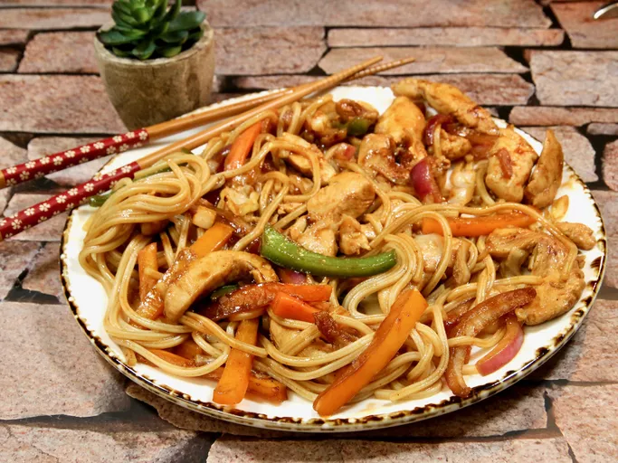

A bowl of spicy Chicken Yaki Udon
Description
This delicious yaki udon stir-fry is similar to yakisoba, but it's made with thick, white udon noodles and tossed with a much simpler sauce. Often used in soups, udon noodles are also delicious fried — the texture is just awesome because they are chewy. Try to find frozen or fresh udon noodles. Dried udon noodles will work, but you'll lose some of the signature texture.
Ingredients
- 6 ounces frozen udon noodles
- 1 tablespoon olive oil
- 1/2 pound boneless chicken breasts, cut into thin strips
- 1/2 onion, sliced
- 1/2 red bell pepper, sliced
- 1/2 cup shredded cabbage
- 1 teaspoon minced garlic
- 2 tablespoons soy sauce, or more to taste
- 1 tablespoon gochujang (Korean chile paste)
- 1 tablespoon ketchup
- salt and ground black pepper for taste
Steps
- Bring a large pot of lightly salted water to a boil. Cook udon in boiling water, stirring occasionally, until noodles are tender yet firm to the bite, 10 to 12 minutes. Drain noodles and rinse with cold water.
- Meanwhile, warm olive oil in large saucepan or wok over medium heat. Add chicken and saute until cooked through, 3 to 4 minutes. Add onion, bell pepper, cabbage, carrots, and garlic. Cook for 3 to 4 minutes, allowing vegetables to maintain most of their crispness.
- Pour soy sauce over vegetables and chicken; saute 1 to 2 minutes more. Add udon noodles and toss well. Mix in gojuchang and ketchup, thoroughly combining to mix all the flavors. Season with salt and pepper.
Tips
Boneless chicken thighs may be used in place of boneless chicken breasts, if preferred.
Orange of yellow bell pepper can be substituted for red, if you'd like.